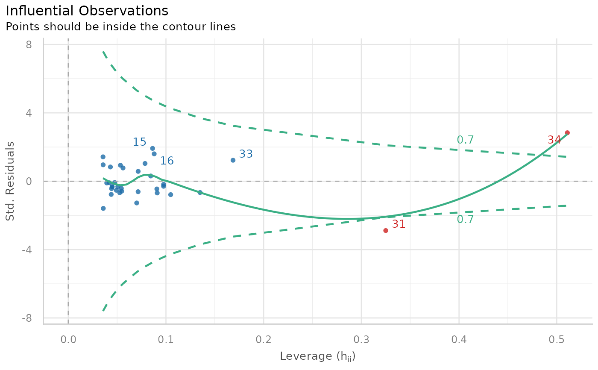
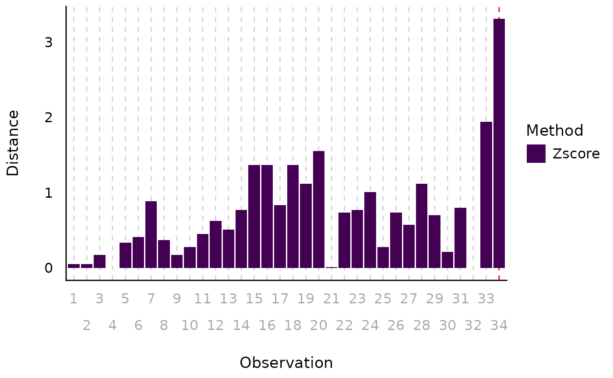
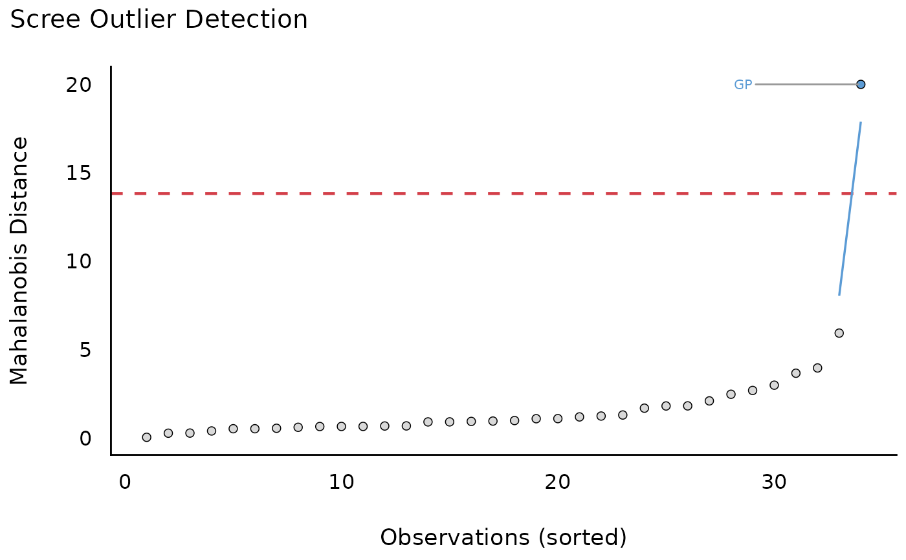

The plot() method for the performance::check_outliers()
function.
Usage
# S3 method for class 'see_check_outliers'
plot(
x,
size_text = 3.5,
linewidth = 0.8,
size_title = 12,
size_axis_title = base_size,
base_size = 10,
alpha_dot = 0.8,
theme = NULL,
colors = c("#3aaf85", "#1b6ca8", "#cd201f"),
rescale_distance = FALSE,
type = "dots",
elbow_threshold = NULL,
show_labels = TRUE,
verbose = TRUE,
...
)Arguments
- x
An object.
- size_text
Numeric value specifying size of text labels.
- linewidth
Numeric value specifying size of line geoms.
- base_size, size_axis_title, size_title
Numeric value specifying size of axis and plot titles.
- alpha_dot
Numeric value specifying alpha level of the point geoms.
- theme
A ggplot2-theme function, e.g.
theme = theme_lucid()ortheme = ggplot2::theme_dark().- colors
Character vector of length two, indicating the colors (in hex-format) for points and line.
- rescale_distance
Logical. If
TRUE, distance values are rescaled to a range from 0 to 1. This is mainly due to better catch the differences between distance values.- type
Character vector, indicating the type of plot. Options are:
"dots"(default) for a scatterplot of leverage (hat) values versus residuals, with Cook's Distance contours for evaluating influential points."scree"for a scree-style plot highlighting "elbow outliers" (based on sudden increases in distance; see details)."bars"for a bar chart of (rescaled) outlier statistic values for each data point."count"for a "histogram"-style plot of outlier, where bins represent the outliers' distance values.
type = "dots"is only used for outlier plots of fitted models; for outlier plots of raw data values,typeshould be one of the other options.- elbow_threshold
Optional scalar specifying the minimum jump in distance (between adjacent sorted observations) used to detect the elbow point. If supplied, all observations following the first jump greater than this value are flagged as outliers. If
NULL(default), the largest jump is used automatically. Higher values yield more conservative outlier detection.- show_labels
Logical. If
TRUE, text labels are displayed.- verbose
Logical. If
TRUE(default), prints a summary list of outliers.- ...
Arguments passed to or from other methods.
Details
When using type = "scree", the function will provide a
scree-style distance plot that highlights two types of outliers.
Observations exceeding the specified threshold are shown in warm colors,
while observations following the largest jump ("elbow", or the specified
cut-off value) in the sorted distances are shown in cool colors. Elbow
outliers are defined based on sudden increases in distance, analogous to
inflection points in scree plots.
References
The scree plot implementation was inspired by a visualization approach developed by Prof. Marina Doucerain (Université du Québec à Montréal).
Examples
library(performance)
data(mtcars)
mt1 <- mtcars[, c(1, 3, 4)]
mt1$ID <- row.names(mt1)
mt2 <- rbind(
mt1,
data.frame(
mpg = c(37, 48), disp = c(300, 400), hp = c(110, 120),
ID = c("JZ", "GP")
)
)
model <- lm(disp ~ mpg + hp, data = mt2)
plot(check_outliers(model))

plot(check_outliers(mt2$mpg, method = "zscore"), type = "bars")

plot(check_outliers(mt2[-3], method = "mahalanobis", ID = "ID"))
#> $threshold_outliers
#> [1] "GP"
#>
#> $threshold
#> [1] 13.81551
#>
#> $elbow_outliers
#> [1] "GP"
#>
#> $elbow_threshold
#> [1] 14.06579
#>
